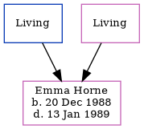

Emma Jayne Horne 1988 - 1989 [ Home ] | [ Calendar ] | [ Surnames Index ] | [ Family History ]The eldest of 3 children of David Horne and Michaela Grant Emma Horne , the niece of Nigel Horne , was born in Thanet, Kent, England on Dec 20, 19881,2,3 .
She died in Thanet on Jan 13, 19893 .
Parents David James Michaela Jayne Citations England & Wales deaths 1837-2007 - Findmypast England & Wales, Birth Index: 1916-2005 Online publication - Provo, UT, USA: The Generations Network, Inc., 2008.Original data - General Register Office. England and Wales Civil Registration Indexes. London, England: General Register Office. © Crown copyright. Published by permission of the Cont England & Wales, Death Index: 1984-2005 Online publication - Provo, UT, USA: The Generations Network, Inc., 2007.Original data - General Register Office. England and Wales Civil Registration Indexes. London, England: General Register Office. © Crown copyright. Published by permission of the Cont Media England & Wales births 1837-2006 - BMD/B/1989/1/117158930 England & Wales deaths 1837-2007 - BMD/D/1989/1/77341421 Family Tree Map
Generated by ged2site . Last updated on Feb 28, 2025